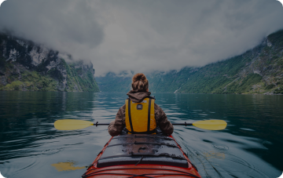

- Главная
- Экскурси
- Kабинет



Популярная экскурсии
Смотреть все
Автобусный тур
 6 часов
6 часов
 618 ₽
Приглашаем вас на экскурсию
"Обзорная по Большому Сочи":
Экскурсия начнется с подъёма на гору Большой Ахун -
это высшая точка (665 метров) на побережьи Сочи.
На вершине горы Большой Ахун есть смотровая башня,
построенная в 1935-36 годах по проекту архитектора
С. И. Воробьева...
618 ₽
Приглашаем вас на экскурсию
"Обзорная по Большому Сочи":
Экскурсия начнется с подъёма на гору Большой Ахун -
это высшая точка (665 метров) на побережьи Сочи.
На вершине горы Большой Ахун есть смотровая башня,
построенная в 1935-36 годах по проекту архитектора
С. И. Воробьева...
Обзорная по Сочи (из Адлера)
6 часов
618 ₽
Конный тур
1,5 часа
1809 ₽
Конные прогулки проходят в Лазурной
долине. С долины открывается красивый вид на море, горы и лес.
На всем пути следования экскурсии вас будут сопровождать
опытные инструктора. Катание на лошадях или иппотерапия
очень полезна для детей и взрослых...
Конные прогулки
1,5 часа
1809 ₽
Квадро тур
2,5 часа
3515 ₽
Маршрут на Квадроциклах проходит по
горной реке Мзымта вдоль белых скал и самшитовый лес к водопаду
Глубокий Яр или "Пасть Дракона" (экскурсионное название).
Высота водопада 41,5 метр - это один из самых высоких водопадов Большого Сочи....
Пасть дракона
2,5 часа
3515 ₽
Автобусный тур
4 часа
618 ₽
Конные прогулки проходят в Лазурной
долине. С долины открывается красивый вид на море, горы и лес.
На всем пути следования экскурсии вас будут сопровождать
опытные инструктора. Катание на лошадях или иппотерапия очень
полезна для детей и взрослых...
Женский монастырь
4 часа
618 ₽
Виды экскурсий

Автобусный тур
Один из самых насыщенных впечатлениями, доступных по цене и популярных видов отдыха. Во время одной поездки можно посмотреть достопримечательности сразу нескольких городов, причем обойдется это едва ли не в разы дешевле классического экскурсионного тура с ночевками в отелях.Джиппинг
Это путешествие на автомобилях высокой проходимости с преодолением естественных препятствий, это экстремальный вид спорта и отдыха, представляющий собой прохождение туристического маршрута по бездорожью на автомобилях.Яхтинг
Это то же, что круиз на лайнере или прогулка на пароме, только на яхте больше свободы, размеры судна в разы меньше, нет назойливой команды, можно самостоятельно почувствовать себя капитаном, постоять за штурвалом. Именно здесь вы почувствуете величайшие просторы Черногор моря.
Каньонинг
Это экстремально-спортивный вид отдыха, который заключается в преодолении каньонов (обводненных или нет) при помощи альпинистского и иного снаряжения, а иногда и вброд, но без лодок или иных плавсредств.
Выбирайте на нашем сайте
экскурсию, которая подходит именно вам и записывайтесь онлайн
без очередей, просто и быстро!